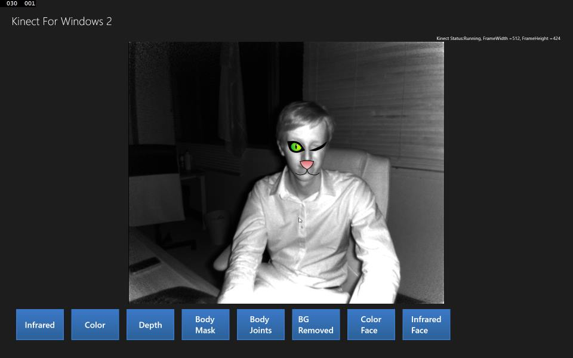
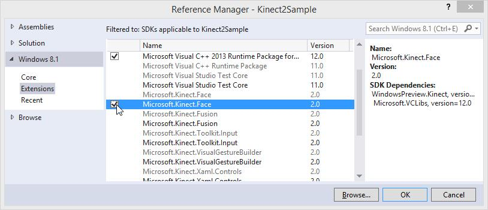
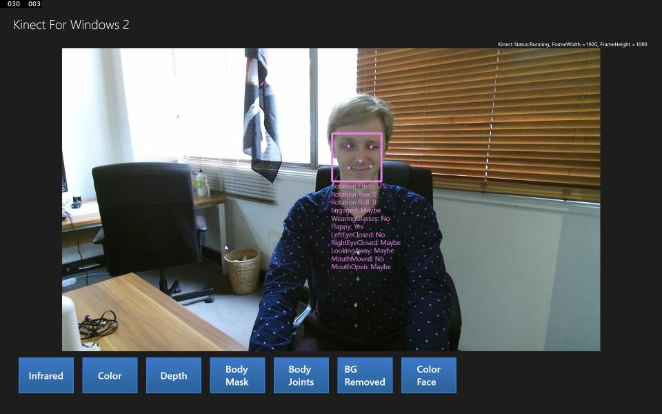
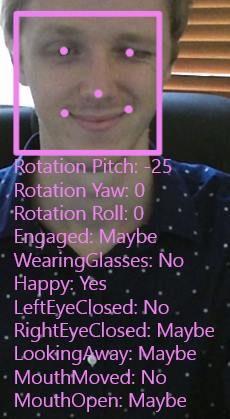

Kinect 2 for Windows Demo App
The Hands On Labs to complete a sample application for Windows 8.1 and the Kinect 2 for Windows
Kinect 2 Hands On Labs
 Lab 8: Face Tracking
Estimated Time to Complete: 40min
This lab is part of a series of hands on labs which teach you how to create a Windows 8.1 Store Application using almost every available feature of the Kinect 2. This is the eighth lab in the series, and it teaches you how to use the Kinect 2 to get face points, and other face properties, for up to 6 bodies.
This lab will explain the following:
- How to add a reference to a pre-built face library in the x64 architecture.
- How to apply the face data on a canvas as an overlay for debugging purposes.
- How to use face data on your own to position images over the face.
Exercise 1 - Using The Face Library
This exercise will teach you how to add a custom library KinectFaceData.dll to the solution for multiple architectures. This library is then used to overlay face data on the color feed with shapes and text.
This lab and all subsequent labs in this series are built using C# and
assume you have a fundamental knowledge of the C# language.
The screenshots here are from Visual Studio Community Edition.
IMPORTANT: The Kinect Face tracking logic is in the Microsoft.Kinect.Face libraries because it has an important difference from the Windows.Kinect libraries: Face Tracking will not work in the x86 (32bit) architecture.
Building a solution with the Microsoft.Kinect.Face libraries in an x86 build is possible, but you will find that accessing the face point data from a successful frame results in a WinRT Exception every time, this is a known bug as of the SDK release v2.0_1409.
The face library to be used is dependent on the Microsoft.Kinect.Face libraries which are installed with the KinectSDK under Windows 8.1 extensions. Although WinRT apps use the WindowsPreview.Kinect libraries and namespaces, it's ok to use the Microsoft.Kinect namespace for the face tracking.
Open the Kinect2Sample project and Right Click the Kinect2Sample project from the Solution Explorer and select Add > Reference...
In the Reference Manager Click Windows 8.1 on the left, then Extensions, then find and check the Microsoft.Kinect.Face SDK and click OK.
Now you need to add a custom portable library that was built to make the Face Tracking simpler. This library is available on the github account if you are interested. In this lab you will be using a release version of of the Library.
- Create a new folder in the solution directory called Libraries (in the same directory as the Kinect2Sample.csproj file).
- Download this zip of the x64 release of the face library:
KinectFaceStore.dll - Extract the zip contents to the Libraries folder you just created. The Libraries folder should contain the KinectFaceStore.dll now.
Add the KinectFaceStore.dll as a reference by browsing to the KinectFaceStore.dll
- Right click the Kinect2Sample References filter in the Solution Explorer and select Add Reference...
- Click the Browse button at the bottom.
- Navigate to the Libraries directory within the solution
- Click Add to add the new library.
Note your current configuration settings by clicking BUILD > Configuration Manager... and checking the Active Solution Platform: on the top right. Make sure it is set to x64.
Build and Run the application and make sure there are no errors.
The rest of the labs depend on the Microsoft.Kinect.Face and so will be built only with x64 architecture from now on.The KinectFaceStore library has a single FaceManager class which can either retrieve the latest tracked faces, or draw the face data for you.
First you will set the library to draw the face data. To achieve this you need a canvas in a viewport, so it fills the space, regardless of its size. You will use the canvas as an overlay.
Open MainPage.xaml and add the new FacePointsCanvas as highlighted below:<Viewbox Grid.Row="1" HorizontalAlignment="Center"> <Grid x:Name="BodyJointsGrid" Background="Transparent" Width="512" Height="414"/> </Viewbox><Viewbox Grid.Row="1" HorizontalAlignment="Center"><Canvas x:Name="FacePointsCanvas"/></Viewbox><StackPanel Grid.Row="1" Orientation="Vertical" HorizontalAlignment="Left" Visibility="{Binding CurrentDisplayFrameType, Converter={StaticResource DisplayTypeToVisibilityConverter}, ConverterParameter=BackgroundRemoved }">Open the MainPage.xaml.cs and add the new namespaces to use, and a new DisplayFrameType, then the new FaceManager private variables.
The FaceManager is the main class in the KinectFaceStore library and is used to initialize and track all the faces.
The FaceFrameFeatures object is used to setup and retrieve custom types of face data.
Copy the following highlighted code to the MainPage class://... using Windows.UI;
using KinectFace; using Microsoft.Kinect.Face;namespace Kinect2Sample { public enum DisplayFrameType { Infrared, Color, Depth, BodyMask, BodyJoints, BackgroundRemoved,FaceOnColor} public sealed partial class MainPage : Page, INotifyPropertyChanged { //... //Body Joints are drawn here private Canvas drawingCanvas;//FaceManager libraryprivate FaceManager faceManager;private FaceFrameFeatures faceFrameFeatures;//...Go to the MainPage() constructor and initialize the FaceManager. The FaceManager takes the currently used KinectSensor, and also the required kinds of FaceFrameFeatures. Here you are retrieving all the FaceFrameFeatures so you have the freedom to select what you want later.
As you are using a canvas as an overlay, it must be reset if not in use; you need to call SetupCurrentDisplay when the UI is loaded, not on construction of MainPage (when the UI is not ready to be manipulated). So now remove SetupCurrentDisplay
(DEFAULT_DISPLAYFRAMETYPE); from the MainPage(). Add a handler for the MainPage.Loaded event and put the SetupCurrentDisplay() in there.public MainPage() { this.multiSourceFrameReader.MultiSourceFrameArrived += this.Reader_MultiSourceFrameArrived;// specify the required face frame results// init with all the features so they are accessible later.this.faceFrameFeatures =FaceFrameFeatures.BoundingBoxInColorSpace| FaceFrameFeatures.PointsInColorSpace| FaceFrameFeatures.BoundingBoxInInfraredSpace| FaceFrameFeatures.PointsInInfraredSpace| FaceFrameFeatures.RotationOrientation| FaceFrameFeatures.FaceEngagement| FaceFrameFeatures.Glasses| FaceFrameFeatures.Happy| FaceFrameFeatures.LeftEyeClosed| FaceFrameFeatures.RightEyeClosed| FaceFrameFeatures.LookingAway| FaceFrameFeatures.MouthMoved| FaceFrameFeatures.MouthOpen;this.faceManager = new FaceManager(this.kinectSensor,this.faceFrameFeatures);// set IsAvailableChanged event notifier this.kinectSensor.IsAvailableChanged += this.Sensor_IsAvailableChanged; //... this.InitializeComponent();this.Loaded += MainPage_Loaded;}void MainPage_Loaded(object sender, RoutedEventArgs e){SetupCurrentDisplay(DEFAULT_DISPLAYFRAMETYPE);}Within the SetupCurrentDisplay() method you must setup the dimensions of the face canvas, and choose which FaceFrameFeatures you would like to display when the new DisplayFrameType.FaceOnColor is selected. You will also need the usual setup for the color frame.
In this exercise you will use the color feed to display all the face data in a simple manner to enable you to debug the code and see the information being retrieved. Add the following highlighted code to the SetupCurrentDisplay() method:private void SetupCurrentDisplay(DisplayFrameType newDisplayFrameType) { //... FrameDescription depthFrameDescription = null;FacePointsCanvas.Children.Clear();// reset the display methods if (this.BodyJointsGrid != null) { this.BodyJointsGrid.Visibility = Visibility.Collapsed; } if (this.FrameDisplayImage != null) { this.FrameDisplayImage.Source = null; } switch (CurrentDisplayFrameType) { case DisplayFrameType.Infrared: //... case DisplayFrameType.Color: //... case DisplayFrameType.Depth: //... case DisplayFrameType.BodyMask: //... case DisplayFrameType.BodyJoints: //... case DisplayFrameType.BackgroundRemoved: //...case DisplayFrameType.FaceOnColor:colorFrameDescription =this.kinectSensor.ColorFrameSource.FrameDescription;this.CurrentFrameDescription = colorFrameDescription;// create the bitmap to displaythis.bitmap = new WriteableBitmap(colorFrameDescription.Width,colorFrameDescription.Height);this.FacePointsCanvas.Width = colorFrameDescription.Width;this.FacePointsCanvas.Height = colorFrameDescription.Height;this.faceFrameFeatures =FaceFrameFeatures.BoundingBoxInColorSpace| FaceFrameFeatures.PointsInColorSpace| FaceFrameFeatures.RotationOrientation| FaceFrameFeatures.FaceEngagement| FaceFrameFeatures.Glasses| FaceFrameFeatures.Happy| FaceFrameFeatures.LeftEyeClosed| FaceFrameFeatures.RightEyeClosed| FaceFrameFeatures.LookingAway| FaceFrameFeatures.MouthMoved| FaceFrameFeatures.MouthOpen;break;default: break; } }Notice how the FaceManager was initialized with the PointsInInfraredSpace and the BoundingBoxInInfraredSpace, yet here you are only asking for the PointsInColorSpace and BoundingBoxInColorSpace. That's because you are rendering an overlay on a canvas with the dimensions of the color frame, so points in the mapping of the infrared (or depth) frame dimensions are wrong for this resolution.
The FaceManager is now ready to draw the face data to a canvas.In the Reader_MultiSourceFrameArrived() method, add a call to DrawLatestFaceResults and pass the canvas and the requested FaceFrameFeatures. (ShowColorFrame() was already done in an earlier lab).
private void Reader_MultiSourceFrameArrived(MultiSourceFrameReader sender, MultiSourceFrameArrivedEventArgs e) { //... switch (CurrentDisplayFrameType) { case DisplayFrameType.Infrared: //... case DisplayFrameType.Color: //... case DisplayFrameType.Depth: //... case DisplayFrameType.BodyMask: //... case DisplayFrameType.BodyJoints: //... case DisplayFrameType.BackgroundRemoved: //...case DisplayFrameType.FaceOnColor:using (colorFrame =multiSourceFrame.ColorFrameReference.AcquireFrame()){ShowColorFrame(colorFrame);this.faceManager.DrawLatestFaceResults(this.FacePointsCanvas, this.faceFrameFeatures);}break;default: break; } }Next create a button to change the current DisplayFrameType to the new FaceOnColor type. Open the MainPage.xaml and add this new button:
<Button Style="{StaticResource FrameSelectorButtonStyle}" Click="BackgroundButton_Click"> <TextBlock Text="BG Removed" TextWrapping="Wrap" /> </Button><Button Style="{StaticResource FrameSelectorButtonStyle}"Click="ColorFaceButton_Click"><TextBlock Text="Color Face" TextWrapping="Wrap" /></Button>Open MainPage.xaml.cs and in the MainPage class add a handler for the button click.
private void ColorFaceButton_Click(object sender, RoutedEventArgs e){SetupCurrentDisplay(DisplayFrameType.FaceOnColor);}Build and run the application. Click on the Color Face button and you will see the face data displayed. Make sure your whole body is in frame. Once it detects your body it will add your face to the frame as an overlay along with all the data available on the Kinect.

The FaceFrameResult has a number of properties, all of which are shown here. These properties all come with a DetectionResult of Yes, No or Maybe. There is also rotational data of the face, which is drawn here to the closest 5 degrees.

Try tracking multiple faces. Each detected face is given a different color.
Exercise 2 - Drawing Your Own Face
The face tracking data you exposed in the last exercise is good for debugging, but it's more fun to use the data to achieve something. Given that we have some important points in the face available, this exercise will teach you how to position image assets at the same position as the detected face points, for multiple faces.
You will make users look like a cat in the night, by rendering an overlay of cat eyes onto the infrared frame.
Download the following images and put them in the Assets directory of the solution. Right click eash image and Select Save As...


Open the MainPage.xaml.cs and add a new DisplayFrameType and add the new private variable image assets which will store the cat images to be positioned later.
These assets are stored in arrays, as there can be up to 6 bodies using the same image.namespace Kinect2Sample { public enum DisplayFrameType { Infrared, Color, Depth, BodyMask, BodyJoints, BackgroundRemoved, FaceOnColor,FaceOnInfrared} public sealed partial class MainPage : Page, INotifyPropertyChanged { //... //FaceManager library private FaceManager faceManager; private FaceFrameFeatures faceFrameFeatures;//Cat assetsprivate Image[] catEyeRightOpen, catEyeRightClosed,catEyeLeftOpen, catEyeLeftClosed, catNose;//...In the MainPage_Loaded handler, call a new method named SetupCatAssets, which will load and position the cat images:
void MainPage_Loaded(object sender, RoutedEventArgs e) { SetupCurrentDisplay(DEFAULT_DISPLAYFRAMETYPE);SetupCatAssets();}Now create that SetupCatAssets method. This method initializes all the image asset arrays and loads the appropriate image.
The only thing worth mentioning here is that the eye is flipped to become the asset of the right eye, saving space on resources. The rest is boilerplate.private void SetupCatAssets(){ScaleTransform flipTransform =new ScaleTransform() { ScaleX = -1.0 };int bodyCount = kinectSensor.BodyFrameSource.BodyCount;catEyeRightOpen = new Image[bodyCount];catEyeRightClosed = new Image[bodyCount];catEyeLeftOpen = new Image[bodyCount];catEyeLeftClosed = new Image[bodyCount];catNose = new Image[bodyCount];for (int i = 0; i < kinectSensor.BodyFrameSource.BodyCount; i++){catEyeRightOpen[i] = new Image(){Source = new BitmapImage(new Uri(this.BaseUri,"Assets/CatEye_left_open.png")),Width = 30,Height = 20,RenderTransformOrigin = new Point(0.5, 0.5),RenderTransform = flipTransform};catEyeRightClosed[i] = new Image(){Source = new BitmapImage(new Uri(this.BaseUri,"Assets/CatEye_left_closed.png")),Width = 30,Height = 20,RenderTransformOrigin = new Point(0.5, 0.5),RenderTransform = flipTransform};catEyeLeftOpen[i] = new Image(){Source = new BitmapImage(new Uri(this.BaseUri,"Assets/CatEye_left_open.png")),Width = 30,Height = 20};catEyeLeftClosed[i] = new Image(){Source = new BitmapImage(new Uri(this.BaseUri,"Assets/CatEye_left_closed.png")),Width = 30,Height = 20};catEyeLeftClosed[i].RenderTransformOrigin =new Point(0.5, 0.5);catNose[i] = new Image(){Source = new BitmapImage(new Uri(this.BaseUri,"Assets/CatNose.png")),Width = 40,Height = 25};}}Edit SetupCurrentDisplay() to handle the new case.
You are now using the infraredFrameDesc in two cases, so it should be moved and declared above the switch statement.
Also note that the FramePointsCanvas is being set to different dimensions and the FrameDisplayTypes are not necessary because you will be drawing ourselves.private void SetupCurrentDisplay(DisplayFrameType newDisplayFrameType) { //... FrameDescription depthFrameDescription = null;FrameDescription infraredFrameDescription = null;FacePointsCanvas.Children.Clear(); //... switch (CurrentDisplayFrameType) { case DisplayFrameType.Infrared: //newinfraredFrameDescription =this.kinectSensor.InfraredFrameSource.FrameDescription;this.CurrentFrameDescription = infraredFrameDescription; // allocate space to put the pixels being // received and converted this.infraredFrameData = new ushort[infraredFrameDescription.Width * infraredFrameDescription.Height]; this.infraredPixels = new byte[infraredFrameDescription.Width * infraredFrameDescription.Height * BytesPerPixel]; this.bitmap = new WriteableBitmap( infraredFrameDescription.Width, infraredFrameDescription.Height); break; case DisplayFrameType.Color: //... case DisplayFrameType.Depth: //... case DisplayFrameType.BodyMask: //... case DisplayFrameType.BodyJoints: //... case DisplayFrameType.BackgroundRemoved: //... case DisplayFrameType.FaceOnColor: //...case DisplayFrameType.FaceOnInfrared:infraredFrameDescription =this.kinectSensor.InfraredFrameSource.FrameDescription;this.CurrentFrameDescription =infraredFrameDescription;// allocate space to put the pixels being// received and convertedthis.infraredFrameData =new ushort[infraredFrameDescription.Width *infraredFrameDescription.Height];this.infraredPixels =new byte[infraredFrameDescription.Width *infraredFrameDescription.Height *BytesPerPixel];this.bitmap = new WriteableBitmap(infraredFrameDescription.Width,infraredFrameDescription.Height);this.FacePointsCanvas.Width =infraredFrameDescription.Width;this.FacePointsCanvas.Height =infraredFrameDescription.Height;break;default: break; } }In the Reader_MultiSourceFrameArrived() handler, add a new case for the new DisplayFrameType.FaceOnInfrared.
In this case, you can draw the InfraredFrame as usual, then you'll make a new method to handle the face.private void Reader_MultiSourceFrameArrived(MultiSourceFrameReader sender, MultiSourceFrameArrivedEventArgs e) { //... switch (CurrentDisplayFrameType) { case DisplayFrameType.Infrared: //... case DisplayFrameType.Color: //... case DisplayFrameType.Depth: //... case DisplayFrameType.BodyMask: //... case DisplayFrameType.BodyJoints: //... case DisplayFrameType.BackgroundRemoved: //... case DisplayFrameType.FaceOnColor: //...case DisplayFrameType.FaceOnInfrared:using (infraredFrame =multiSourceFrame.InfraredFrameReference.AcquireFrame()){ShowInfraredFrame(infraredFrame);DrawFaceOnInfrared();}break;default: break; } }Add the new DrawFaceOnInfrared() method with all the other ShowXXX methods.
This method calls faceManager.GetLatestFaceFrameResults() and retrieves and array of face frame results to use. There are as many elements in the array as possible bodies in a scene, so a maximum of six.
Then iterate through the results, extract the points from the FaceFrameResults, find out if the eye is blinking or not, and as a result, position the corresponding asset on the canvas at the right position.private void DrawFaceOnInfrared(){FacePointsCanvas.Children.Clear();FaceFrameResult[] results = faceManager.GetLatestFaceFrameResults();for (int i = 0; i < results.Count(); i++ ){if (results[i] != null){Point rightEyePoint =results[i].FacePointsInInfraredSpace[FacePointType.EyeRight];Point leftEyePoint = results[i].FacePointsInInfraredSpace[FacePointType.EyeLeft];Point nosePoint = results[i].FacePointsInInfraredSpace[FacePointType.Nose];bool rightEyeIsClosed =results[i].FaceProperties[FaceProperty.RightEyeClosed]== DetectionResult.Yes ||results[i].FaceProperties[FaceProperty.RightEyeClosed]== DetectionResult.Maybe;bool leftEyeIsClosed =results[i].FaceProperties[FaceProperty.LeftEyeClosed]== DetectionResult.Yes ||results[i].FaceProperties[FaceProperty.LeftEyeClosed]== DetectionResult.Maybe;if (leftEyeIsClosed){Canvas.SetLeft(catEyeLeftClosed[i],leftEyePoint.X - (catEyeLeftClosed[i].Width / 2));Canvas.SetTop(catEyeLeftClosed[i],leftEyePoint.Y - (catEyeLeftClosed[i].Height / 2));this.FacePointsCanvas.Children.Add(catEyeLeftClosed[i]);}else{Canvas.SetLeft(catEyeLeftOpen[i],leftEyePoint.X - (catEyeLeftOpen[i].Width / 2));Canvas.SetTop(catEyeLeftOpen[i],leftEyePoint.Y - (catEyeLeftOpen[i].Height / 2));this.FacePointsCanvas.Children.Add(catEyeLeftOpen[i]);}if (rightEyeIsClosed){Canvas.SetLeft(catEyeRightClosed[i], rightEyePoint.X -(catEyeRightClosed[i].Width / 2));Canvas.SetTop(catEyeRightClosed[i], rightEyePoint.Y -(catEyeRightClosed[i].Height / 2));this.FacePointsCanvas.Children.Add(catEyeRightClosed[i]);}else{Canvas.SetLeft(catEyeRightOpen[i],rightEyePoint.X - (catEyeRightOpen[i].Width / 2));Canvas.SetTop(catEyeRightOpen[i],rightEyePoint.Y - (catEyeRightOpen[i].Height / 2));this.FacePointsCanvas.Children.Add(catEyeRightOpen[i]);}Canvas.SetLeft(catNose[i],nosePoint.X - (catNose[i].Width / 2));Canvas.SetTop(catNose[i], nosePoint.Y);this.FacePointsCanvas.Children.Add(catNose[i]);}}}Next add a button to change the current DisplayFrameType to the new FaceOnInfrared type. Open the MainPage.xaml and add this new button:
<Button Style="{StaticResource FrameSelectorButtonStyle}"{Click="InfraredFaceButton_Click" x:Name="InfraredFaceButton">SetupCurrentDisplay(DisplayFrameType.FaceOnColor);<TextBlock Text="Infrared Face" TextWrapping="Wrap" />}</Button>Open MainPage.xaml.cs and in the MainPage class add a handler method for the button click event.
private void InfraredFaceButton_Click(object sender, RoutedEventArgs e){SetupCurrentDisplay(DisplayFrameType.FaceOnInfrared);}Build and Run the application. Click the InfraredFace button and make sure your whole body is in the frame. You should see the cat eyes and nose are positioned appropriately at the recognised face points. Try blinking and the cat eyes blink!
Try using other images, or a whole face!
Summary
This lab explained how to use the KinectFaceStore library to access the face tracking available in Kinect. All the code to retrieve the face tracking is documented in the samples within the Kinect 2 SDK. This library simplifies the accessing of the face frame for you.
This control can also be placed as a overlay on a canvas on top of anything, try combining the face tracking to work with the Background Removal frame or the Body Skeleton frame.
The next lab will begin from the code completed in this lab code.